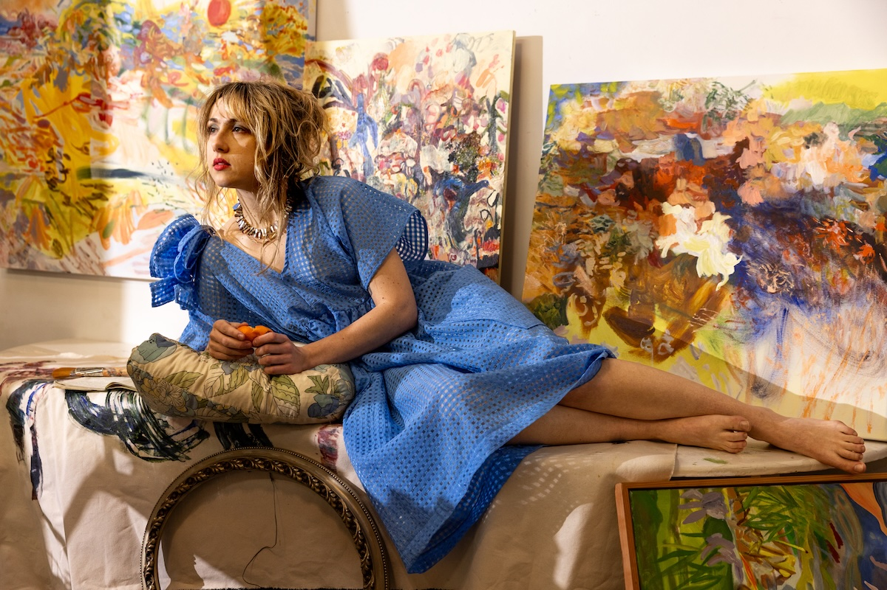

b. 1994 Tallahassee, FL
Lives and works in Portland, Oregon
Solo Exhibitions
2025 Night Swim, Geheim, Bellingham, WA
2025 When the Night Already Knows, Carver Hill, Camden, ME
2025 Special French Blue, Fine Art Fruit, Portland
2024 The Angels Pool Their Tips at Night, Chefas Projects, Portland
2024 Small Works, The Old Church, Portland
2024 They Said No Dancing, after/time collective, Portland
2023 Tartuca, Portland, Oregon
2023 Fallacy of Blue, Albina Press, Portland
2023 UnCreation Story, Liner & Elsen, Portland
2023 ALTAR, North Coast Seed Studio, Portland
2021 I Want Body, LoLo Pass, Portland
2021 Albina Press, Portland
2020 Untitled, Extracto, Portland
2019 Dog River, Hood River
2019 Some Bloom, Crema, Portland
2019 Dear Katya, Extracto, Portland
Selected Group Exhibitions
2025-2026 President's office exhibit, Oregon State University, Corvallis, OR
2025 10 Year Anniversary, Chefas Projects, Portland
2025 Paragon Arts, Portland Community College, Portland
2025 Frieze Week, Lobster Club, Los Angeles
2024 Tryst Art Fair, Torrance, CA
2024 Basta Auctions, Online
2024 Acquired Taste, Big Yard Foundation, Portland
2023 Content, Society Hotel, Portland
2023 Guava, 1122 Gallery, Fonograf editions BUNNY Press inaugural, Portland
2023 Friends of Friends, Wave Group at Carnation Contemporary Gallery, Portland
2019 Urbanite, Portland
Residencies and Collections
2025 Whitehead Island Lighthouse Station, Spruce Head, ME
2024 South Jetty Cottage Residency, Bandon, OR
2024 Waldoboro Inn, Summer Artist in Residence, Waldoboro, ME
2023 Portland TasteMaker Market, Live Painting, Portland
2022 Wilder Bar, permanent installation, Portland
2022 The Allery, public art installation, Portland
2019 Sou’Wester Historical Lodge, Artist in Residence, Seaview, WA
Education
2016 BA in English Literature, Portland State University

Image Copyright Holly Andres 2025